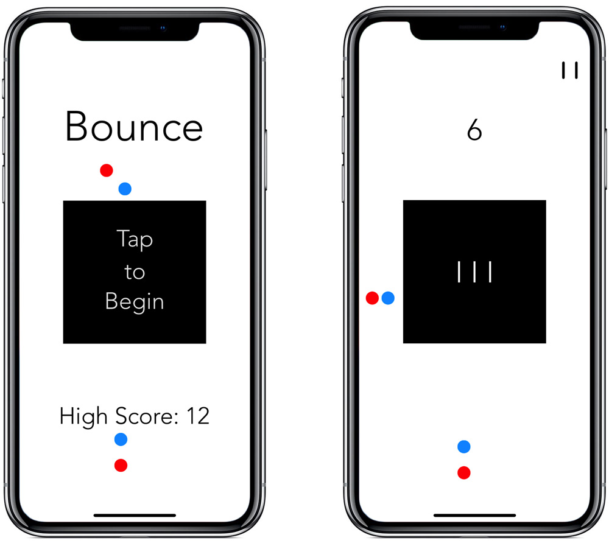

Blake Sanie
Inquisitive student.Aspiring engineer.Photography enthusiast.Curious stock trader.
Built by Blake Sanie with ,
, , and
, and
Projects
Investivision
Intelligent stock market investing tools for the long-term. View the market's top investments at a glance, browse our vast array of rankings, and construct your personal portfolio with optimal growth versus volatility characteristics. Available on web, and soon mobile

Stock Bot
A fully autonomous stock trading system. Machine learning models learn from historical data in order to produce weekly portfolios optimized for risk and volatility. Even with zero human oversight, account value growths exponentially!

Across the Aisle
An app that tries to unite a politically divided America. By housing discussion threads for a variety of controversial political topics, Americans from all over the politcal spectrum can understand each other's perspectives. Awarded as finalist in 2018 Congressional App Challenge.

Regression-Based Stock Analysis
An investment-assisting tool that utilizes statistcal models to infer and visualize trends in S&P 500 stocks. For each symbol in the index, the program parses historical timerseries data and quantifies the stock's growth potential and volatility. Findings are outputted to CSV and a public, interactive website.

Headlines
A remarkably user-friendly news app. As the name implies, notable titles can be browsed with minimal effort. With numerous categories and more than 32 world-renowned news sources to choose from, articles are filtered to fit your interests. If a headline just isn't enough, an article description, photo, and the full article are one press away.

Twitter Poetry Detection
A NLP-driven bot with an appreciation for poetry. The bot listens to Twitter's tweet stream, continously searching for updates that contain the subject "life" and maintain a rhyming scheme when reformatted into a quadrain. Selected tweets are automatically retweeted, giving accidental poets a shoutout on the platform.

Spotify Mosaic
A digital art project. This web app provides a means of visualization one's music taste. Users can authenticate with their Spotify account and build creative mosaics from album covers on their playlists. Exporting and printing features come built in!

Calculess.js
An open source javaScript library that provides complex calculus functions through abstract and easy-to-use methods. Download Calculess to start implementing limits, derivatives, integrals, and more with your project's functions, or contribute to the repository on GitHub!

Qwerty, Revisited
An experiment in which a new, optimal keyboard for the english language is created and compared directly to QWERTY. The keyboard is generated using Node.js by reading specified text files, developing a markov chain, and using letter-to-letter trends to algorithmically design the key layout. In the end, my keyboard performed with 124% Qwerty's efficiency.
Trending Twitter Links
A full-stack project using Node.js and jQuery. The back-end listens to Twitter's stream of incoming tweets. The program continuously parses them for URLs, and algorithmically tracks their popularity. Popular links are sent to the front-end with an API using the Express framework. On the website, users can interact with the moment's most trending links on Twitter

Proximity
A map application like no other. It uses iPhone's GPS, gyroscrope, and a connection to Google's Places API to locate and identify locations within a certain radius of the user's current position. Then, when you select one of these locations, its relative direction and distance are projected over the device's live camera feed, effectively tracking the location in real time.

Bounce
A simple arcade game app for casual players of all ages. The game's objective is to protect the black square from the red balls at all times. Strategically orient the square in order to ricochet the blue ball into the red, pushing it away from the square. If the red ball ever touches the square, one of the three lives is lost. How long will you last?
